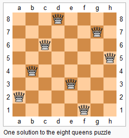
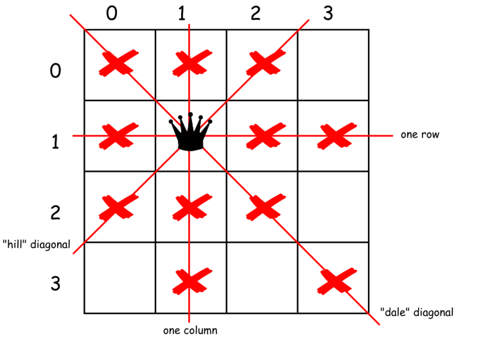
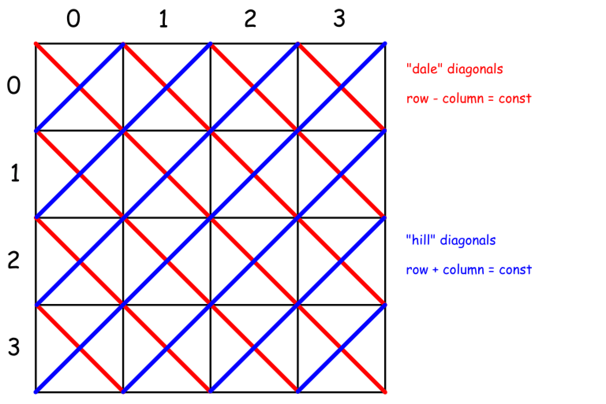

The n-queens puzzle is the problem of placing n queens on an n×n chessboard such that no two queens attack each other.

Given an integer n, return all distinct solutions to the n-queens puzzle.
Each solution contains a distinct board configuration of the n-queens' placement, where Q and . both indicate a queen and an empty space respectively.
Input: 4 Output: [ [".Q..", // Solution 1 "...Q", "Q...", "..Q."], ["..Q.", // Solution 2 "Q...", "...Q", ".Q.."] ] Explanation: There exist two distinct solutions to the 4-queens puzzle as shown above.
解题分析
八皇后问题是回溯思想的经典题目。
当在棋盘上放置了一个皇后后，立即排除当前行，列和对应的两个对角线。这里有一点可以优化：我们从上向下进行尝试，所以，只需要判断当前行以上的相关节点是否冲突即可。另外，先检查再渐进点，合适之后，再向前走，可以做到有效地剪枝。

这里有个知识点需要注意：
对于所有的主对角线有 行号 + 列号 = 常数；
对于所有的次对角线有 行号 - 列号 = 常数。
如下图所示：

利用回溯解题时，只回溯一半，然后将每个解反转即可求得另外一般解。这里有个细节需要注意：如果长度是奇数，而且第一行中间是合法位置，则在回溯过程中已经产生了对称解法。就不需要再反转了。。
参考资料
The n-queens puzzle is the problem of placing n queens on an n×_n_ chessboard such that no two queens attack each other.

Given an integer n, return all distinct solutions to the n-queens puzzle.
Each solution contains a distinct board configuration of the n-queens' placement, where 'Q' and '.' both indicate a queen and an empty space respectively.
Example:
Input: 4 Output: [ [".Q..", // Solution 1 "...Q", "Q...", "..Q."], ["..Q.", // Solution 2 "Q...", "...Q", ".Q.."] ] Explanation: There exist two distinct solutions to the 4-queens puzzle as shown above.
1
2
3
4
5
6
7
8
9
10
11
12
13
14
15
16
17
18
19
20
21
22
23
24
25
26
27
28
29
30
31
32
33
34
35
36
37
38
39
40
41
42
43
44
45
46
47
48
49
50
51
52
53
54
55
56
57
58
59
60
61
62
63
64
65
66
67
68
69
70
71
72
73
74
75
76
77
78
79
80
81
82
83
84
85
86
87
88
89
90
91
92
93
94
95
96
97
98
99
100
101
102
103
104
105
106
107
108
109
110
111
112
113
114
115
116
117
118
119
120
121
122
123
124
125
126
package com.diguage.algorithm.leetcode;
import java.util.ArrayList;
import java.util.List;
import static com.diguage.algorithm.util.PrintUtils.printMatrix;
/**
* = 51. N-Queens
*
* [N-Queens - LeetCode](https://leetcode.com/problems/n-queens/)
*
* @author D瓜哥, https://www.diguage.com/
* @since 2020-02-05 12:55
*/
public class _0051_NQueens {
/**
* Runtime: 4 ms, faster than 64.59% of Java online submissions for N-Queens.
* Memory Usage: 41.3 MB, less than 5.41% of Java online submissions for N-Queens.
*/
public List<List<String>> solveNQueens(int n) {
int[][] matrix = new int[n][n];
List<List<String>> result = new ArrayList<>();
backtrack(matrix, 0, 0, result);
int size = result.size();
if (size == 0) {
return result;
}
for (int i = 0; i < size; i++) {
List<String> om = result.get(i);
// 如果长度是奇数，而且第一行中间是合法位置，则在回溯过程中已经产生了对称解法。
if (!(n % 2 == 1 && om.get(0).charAt(getMid(n)) == 'Q')) {
List<String> nm = reverseMatrix(om);
result.add(nm);
}
}
return result;
}
private List<String> reverseMatrix(List<String> matrix) {
List<String> result = new ArrayList<>(matrix.size());
for (String s : matrix) {
StringBuilder sb = new StringBuilder(s);
result.add(sb.reverse().toString());
}
return result;
}
private void backtrack(int[][] matrix, int y, int step, List<List<String>> result) {
int length = matrix.length;
if (step == length) {
result.add(matrixToList(matrix));
return;
}
for (int xi = 0; xi < length; xi++) {
if (y == 0) {
int mid = getMid(length);
if (mid < xi) {
break;
}
}
if (isValid(matrix, y, xi)) {
matrix[y][xi] = 1;
backtrack(matrix, y + 1, step + 1, result);
matrix[y][xi] = 0;
}
}
}
private int getMid(int length) {
return length % 2 == 0 ? length / 2 - 1 : length / 2;
}
private List<String> matrixToList(int[][] matrix) {
List<String> result = new ArrayList<>(matrix.length);
for (int y = 0; y < matrix.length; y++) {
StringBuilder sb = new StringBuilder();
for (int x = 0; x < matrix[0].length; x++) {
if (matrix[y][x] == 0) {
sb.append(".");
} else {
sb.append("Q");
}
}
result.add(sb.toString());
}
return result;
}
private boolean isValid(int[][] matrix, int y, int x) {
int len = matrix.length;
// 同列
for (int i = 0; i < y; i++) {
if (matrix[i][x] == 1) {
return false;
}
}
// // 同行
// for (int i = 0; i < len; i++) {
// if (i != x && matrix[y][i] == 1) {
// return false;
// }
// }
// 左上角
for (int i = 1; i < len && y - i >= 0 && x - i >= 0; i++) {
if (matrix[y - i][x - i] == 1) {
return false;
}
}
// 右上角：从右上角到最下角的对角线，他们 "行号 + 列号 = 常数"
int sum = x + y;
for (int yi = y - 1; yi >= 0 && 0 <= sum - yi && sum - yi < len; yi--) {
if (matrix[yi][sum - yi] == 1) {
return false;
}
}
return true;
}
public static void main(String[] args) {
_0051_NQueens solution = new _0051_NQueens();
List<List<String>> r1 = solution.solveNQueens(14);
printMatrix(r1);
}
}